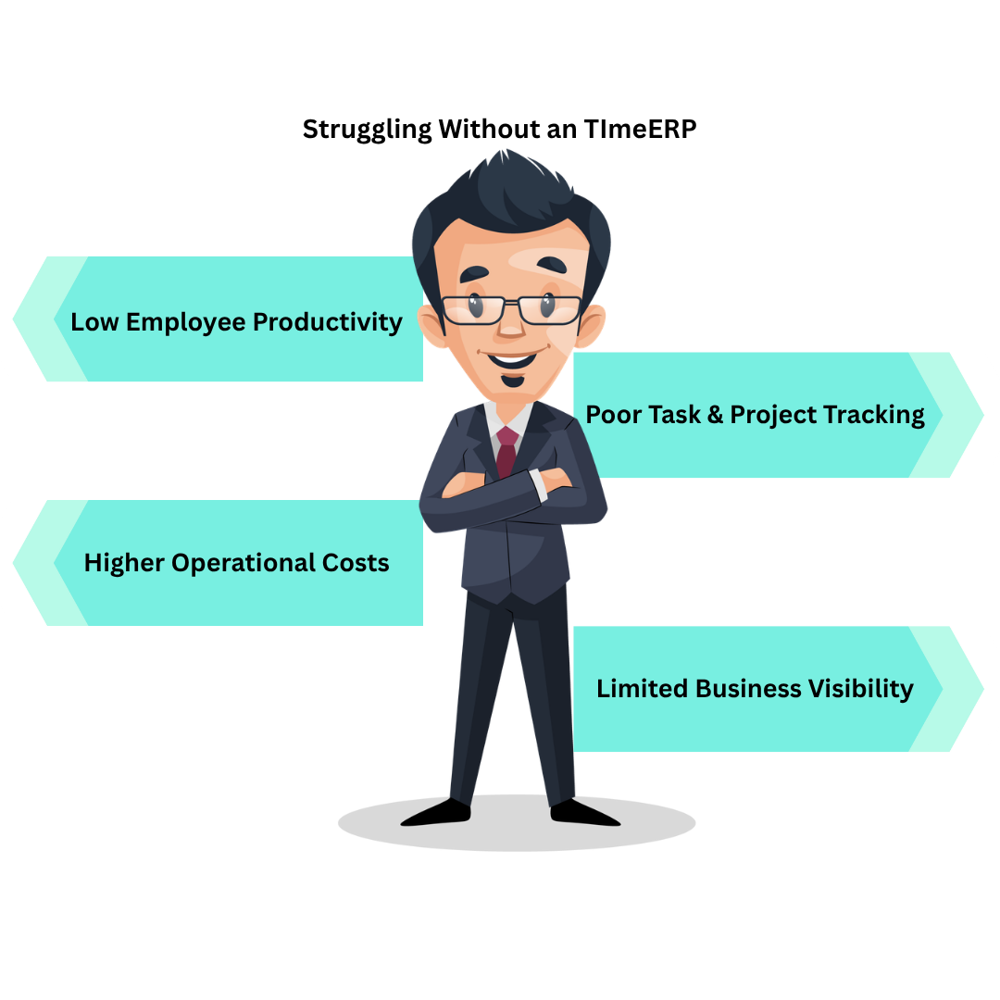
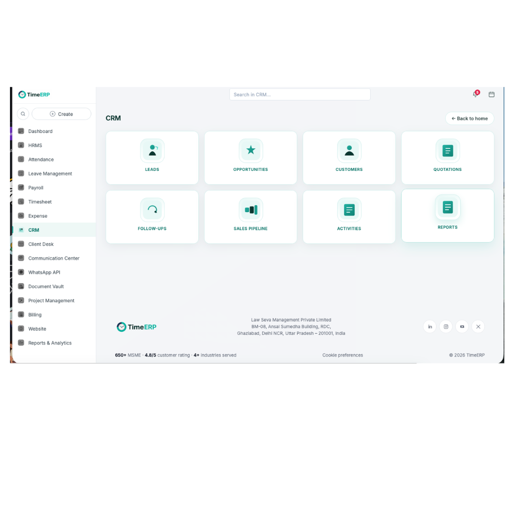
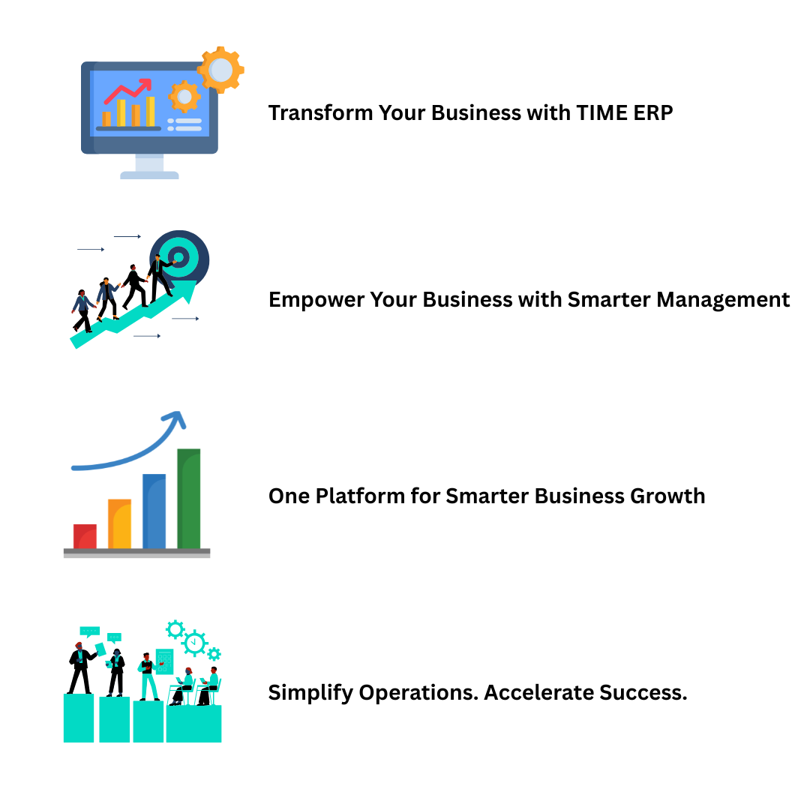

Introduction
Growing MSMEs need clear systems for people, customers, projects, billing, and communication.
Spreadsheets work early on. They break as teams grow. Visibility drops.
This guide covers MSME challenges, ERP basics, TIME ERP modules, and key benefits.
1. What Are MSMEs and What Challenges Do They Face?
What is an MSME?
MSMEs are Micro, Small, and Medium Enterprises. They create jobs at lower capital cost than large industries.
They also support rural growth and often work with larger companies.
Challenges faced by MSMEs
As MSMEs grow, daily work gets harder. Teams manage staff, customers, projects, billing, and communication at once.
Without one shared system, data sits in many places. Leaders lose a clear business view.

2. What Is ERP and Why Is ERP Important for MSMEs?
ERP means Enterprise Resource Planning. It connects core processes in one system for speed and control.
Cloud ERP gives live insights across finance, supply chain, and HR.
- One source of truth for business data
- Faster reporting and clearer visibility
- Better coordination across teams
- Processes that scale with growth
3. Why Traditional Manual Methods Fail in MSMEs
Many MSMEs still use spreadsheets and disconnected tools. Common problems:
- Lack of visibility
- Manual errors
- Delayed reporting
- Poor team coordination
- Difficulty managing growth
Spreadsheets feel flexible at the start. They do not scale as a system of record.
Separate tools raise duplicate entry. Reports take longer.
4. How TIME ERP Solves MSME Business Problems
TIME ERP brings core operations into one platform.
It helps MSMEs automate workflows. Leaders get live data for faster decisions.
TIME ERP replaces scattered follow-ups with shared workflows.
5. TIME ERP Modules Explained in Detail
ERP systems group work into modules that share one database.
Teams can launch all modules at once, or start with finance and add more later.
10 core ERP modules
- Financial management: Payables, receivables, ledger, and faster closes.
- Procurement: Quotes, purchase orders, and approved vendor buying.
- Risk management: Controls, audits, and fraud checks.
- Supply chain: Stock, demand, and order fulfillment.
- Performance management: Plans, budgets, forecasts, and reports.
- Manufacturing: Production runs and plant cost tracking.
- CRM: Leads, history, follow-ups, quotes, and service.
- Human resources: Records, attendance, leave, and payroll support.
- Project management: Schedules, budgets, and resources.
- ERP analytics: Profit, cash flow, payables, and spend risks.

6. Benefits of Using TIME ERP for MSME Growth
Growth needs clean operations. TIME ERP helps with automation, shared data, and live insights.
- Lower costs: Automate attendance, leave, payroll, tasks, billing, and reports.
- Higher productivity: Teams work from one place with clear deadlines.
- Better decisions: Dashboards show performance, projects, revenue, and expenses.
- Easier scale: Add people and projects without new tool chaos.
- Better customer service: Track interactions and follow-ups in one CRM.
7. Why TIME ERP Is Better Than Multiple Software Tools
Many MSMEs use separate apps for HR, CRM, accounting, and tasks. Each app solves one problem.
- Duplicate data entry
- Higher software costs
- Scattered information
- No single business view
- Hard reporting
TIME ERP connects HRMS, CRM, tasks, projects, billing, and reports in one login.
| Multiple Software | TIME ERP |
|---|---|
| Multiple logins | Single login |
| Separate databases | Centralized data |
| Duplicate data entry | One-time data entry |
| Difficult reporting | Real-time reports |
8. Industries That Can Benefit from TIME ERP
TIME ERP fits real estate, construction, manufacturing, IT, professional services, and startups.
Teams use it for projects, clients, attendance, billing, HR, and CRM in one place.
9. Frequently Asked Questions (FAQ)
TIME ERP is one platform for HR, CRM, projects, billing, communication, and reporting.
Yes. It helps MSMEs automate work and raise productivity.
Yes. HRMS covers attendance, leave, records, and payroll support.
Yes. Teams can assign tasks, track progress, and manage deadlines.
Yes. CRM manages leads, records, follow-ups, and history.
Yes. Teams can open business data from anywhere with internet.
10. Conclusion and Call to Action
A strong MSME needs the right technology. TIME ERP brings people, customers, tasks, and billing into one platform.
It cuts manual work and gives leaders live insights for confident growth.

Ready to simplify your business operations?
See how TIME ERP can automate work and support smarter decisions. Book a free demo today.